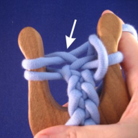

The difference between a flat and a square cord is the way how the yarn is looped around the prong. Flat lucet is easiest without flipping the lucet, and the front and the back of the cord are different.
It is easiest to start with the flat cord by doing a bit of basic square lucet first. Then hold the lucet as if you were starting a new movement, but don't put the yarn round the right prong.
 |
Loop the yarn round the right prong in a way that the yarn from the ball is under the yarn from the cord. The yarn from the ball ends up behind the lucet. Now lift the right loop normally, but don't flip the lucet. Tighten a bit carefully.(Click the photo for a bigger version.) |
|  | Now loop the yarn in the same way round the left prong. The yarn from the ball should be under the yarn from the cord and the yarn from the ball is behind the lucet. Lift the left loop over the loop you just created. Tighten a bit. (Click the photo for a bigger version.) |
{kind=link}
Attention! Because of the structure of the cord you should grab the loop from behind the lucet as you can see me do in the video below.
If the embedded video doesn't work for you or if it is too fast for you, I made a slower video on braiding the flat cord.
|
|

|

You can alternate between a flat and a square cord by just changing the way the yarn goes around the prong.